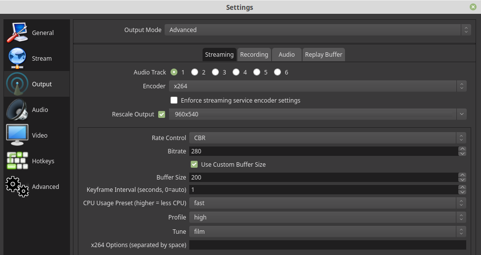

Welcome to PlutoDVB, ADALM-PLUTO QO-100/DATV custom firmware
Thank you for testing this custom firmware. It is mainly intended to make an easy plateform for transmission and reception on QO-100 satellite but could be used on other bands. It includes :
DATV DVBS/S2/DVBT modulator (25KSymbols to 2MSymbols).
Assume that pluto is directly connected to PC. Go to connection/new and type the URL. The parsing is very poor so, be very carefull with syntax, particularly "," which is used for parameter separator.
Frequency in Mhz: 437
Mode (DVBS/DVBS2) : DVBS2
Constellation (QPSK,8PSK,16APSK): QPSK (only QPSK in valid in DVBS)
SymbolRate in KS (33-2000) : 333
FEC (12,23,34,67,78...) : 23
Gain in dB (-71..0): 0
---Advanced parameters---
Calib mode {calib,nocalib]}: Force a calibration process (high spike) with calib
PCR/PTS delay (100-2000):default 600: if encoding suffers from underflow, increase this
Audio transcoding bitrate: Audio bitrate from OBS could not go down below 64kbit , this is used to workaround that
You can install OBS Studio websocket so that PlutoDVB will steer directly this parameters directly. Eanble this feature in PlutoDVB setup.
VMIX
Transport stream bitrate
DVBS/S2 modulation is a fix channel bitrate. This bitrate is calculated from parameters (SymbolRate,FEC,Pilots) and is called the net transport stream bitrate. Online DVBS/S2 calculator could help.Transport stream contains video+audio but also some other metadata (dvb table).
Video bitrate and Size
To ensure that we don't overflow the ts bitrate capacity, we need to set a correct video bitrate. A good starting point is a video at 70% of the ts bitrate. On example, I set video at 280kbps (a bit lower than 70% of 440kbps net bitrate (308kbps).
Video size is very important for quality, however when you use low symbolrates, you should reduce video size as the encoder will give you bad artefacts. It is a compromise. Here 960*540.
OBS

VMIX
Transmitting
You can now test your setup to see if all is working properly. Pushing the "Start streamin" button let you know if the connection is running. DVBS/S2 transmission should start in about 5 seconds. Stopping the stream, stop the transmission after around 2 seconds (until you have some overflows).
Assume that phone and pluto are on a same network (through wifi or ethernet). You need first to know IP address of your pluto(on photo 192.168.1.29). Go to connection/new and type the URL. The parsing is very poor so, be very carefull with syntax, particularly "," which is used for parameter separator.
Frequency in Mhz: 437
Mode (DVBS/DVBS2) : DVBS2
Constellation (QPSK,8PSK,16APSK): QPSK (only QPSK in valid in DVBS)
SymbolRate in KS (33-2000) : 333
Gain in dB (-71..0): 0
FEC (12,23,34,67,78...) : 23
CALLSIGN
Transport stream bitrate
DVBS/S2 modulation is a fix channel bitrate. This bitrate is calculated from parameters (SymbolRate,FEC,Pilots) and is called the net transport stream bitrate. Online DVBS/S2 calculator could help.Transport stream contains video+audio but also some other metadata (dvb table).
Video bitrate
To ensure that we don't overflow the ts bitrate capacity, we need to set a correct video bitrate. A good starting point is a video at 70% of the ts bitrate. On example, I set video at 280kbps (a bit lower than 70% of 440kbps net bitrate (308kbps).
Video size
Video size is very important for quality, however when you use low symbolrates, you should reduce video size as the encoder will give you bad artefacts. It is a compromise. Here 528*432.
Transmitting
You can now test your setup to see if all is working properly. Pushing the red button let you know if the connection is running. DVBS/S2 transmission should start in about 5 seconds. Stopping the stream, stop the transmission after around 2 seconds (until you have some overflows).
Right now, receiving part is not implemented directly on Pluto (maybe on future releases). Currently you need a satellite receiver (generally could not handle low symbolRate) or PC.
Windows
Common way is to use Minitioune software with Minitiouner hardware : see Vivadatv
PlutoDVB allows you to directly control the channel changes of your minitiouner.
Windows/Linux with SDR
A datv plugin of SdrAngel based on Leandvb is able to receive DATV. It usually requires a high SNR but will be surely improved.
The ADALM-PLUTO Firmware refers to the U-Boot, HDL, Linux kernel, device drivers, and user space software, which runs on the PlutoSDR. This is bundled up and given a specific version number for the PlutoSDR. For help upgrading firmware, check out the online documentation.
If you have any questions regarding this custom firmware or are experiencing any problems following the user guides, or experiments feel free to ask a question. Questions can be asked on our vivadatv forum.
Support the author F5OEO
Even most of this development is done under opensource (GPL), I should apreciate donation for integration, development and materials : Donate
Support the contributor F5UII
I spend many hours on the evolutions of the interfaces and communication features of PlutoDVB.
If you enjoy them, and the price of a coffee doesn't ruin you, I'll be happy to drink one to your good health: Support, Buy me a coffee
About
Author
Hamradio call F5OEO since 1995, electronic and computer science engineer. Interested in experimenting rather than communicating. Main interests : SDR, embedded platform (raspebrry pi), digital television (DVB).
Hamradio call F5UII since 1993, computer science engineer. Likes many aspects of the hobby and is a member of the FY5KE contest team. Discovered a lot of new domains thanks to the QO-100 satellite : Hyperfrequency, SDR, digital television (DVB).
I contribute to PlutoDVB mainly on the man-machine interface (representation standardization, logo, multiple modulation tabs, exchange files), on the communication with third party tools (Minitiouner, OBS Studio, IoT,...).


About
Author
Hamradio call F5OEO since 1995, electronic and computer science engineer. Interested in experimenting rather than communicating. Main interests : SDR, embedded platform (raspebrry pi), digital television (DVB).
Main projects
Contributor
Hamradio call F5UII since 1993, computer science engineer. Likes many aspects of the hobby and is a member of the FY5KE contest team. Discovered a lot of new domains thanks to the QO-100 satellite : Hyperfrequency, SDR, digital television (DVB).
I contribute to PlutoDVB mainly on the man-machine interface (representation standardization, logo, multiple modulation tabs, exchange files), on the communication with third party tools (Minitiouner, OBS Studio, IoT,...).
Main projects